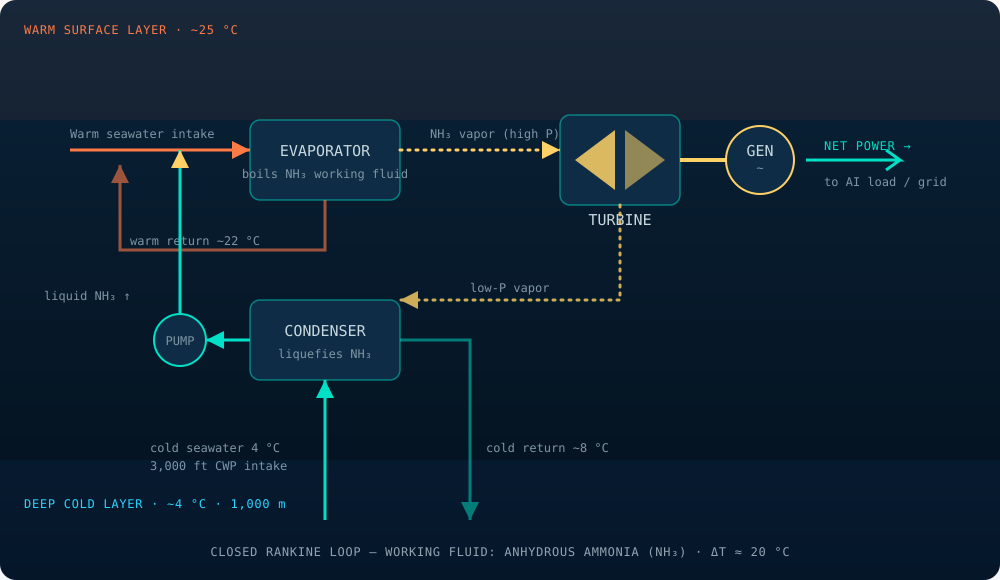

TROIB · Engineering Brief
Closed-Cycle Ammonia OTEC: Thermodynamic Basis and Net Power Yield
A first-principles treatment of the Carnot ceiling, the practical Rankine cycle on anhydrous ammonia, and the parasitic-load accounting that sets net electrical output for utility-scale Ocean Thermal Energy Conversion in the TROIB Gulf zone.
Abstract
Ocean Thermal Energy Conversion (OTEC) extracts work from the standing temperature difference between warm tropical surface water (≈24–25 °C) and cold abyssal water (≈4 °C) drawn from roughly 915 m (3,000 ft) depth. With a gradient of only ΔT ≈ 20 °C the ideal Carnot ceiling is near 7 %, and a real closed-cycle plant converts on the order of 3–4 % of gross thermal throughput to net electricity after parasitic loads. This brief develops the thermodynamic basis of a closed Rankine cycle using anhydrous ammonia (NH3) as the working fluid, maps each stage to the TROIB plant schematic, and presents an energy balance that resolves gross versus net power across the proposed Gulf of Mexico deployment ramp (50 MWgross / 35 MWnet at Year 3 rising to 500 MWgross / 350 MWnet across a ten-platform cluster by Year 10). The dominant parasitic load — cold-water pumping — is shown to be the central design driver, dictating both heat-exchanger surface area and cold-water-pipe diameter.
The Resource and the Carnot Ceiling
The tropical and subtropical ocean is a continuously recharged thermal reservoir. Solar flux maintains a warm mixed layer while the deep ocean retains cold, dense water that originated at the poles. In the TROIB Gulf of Mexico zone the design state points are a warm surface reservoir at Twarm ≈ 24–25 °C and a cold reservoir at Tcold ≈ 4 °C accessed through a 915 m cold-water pipe (CWP). Because OTEC is a heat engine, its maximum theoretically attainable efficiency is the Carnot efficiency evaluated on absolute temperatures:
Substituting Twarm ≈ 298 K (25 °C) and Tcold ≈ 277 K (4 °C):
This 7 % ceiling is the single most important fact in OTEC engineering. Unlike a combustion plant burning fuel near 1,800 K, an OTEC plant works across a vanishingly small temperature ratio, so the absolute conversion efficiency is low by physics, not by engineering deficiency. The design response is not to chase efficiency but to move enormous volumes of water cheaply: the resource is free and effectively unlimited, so economics are governed by the capital cost of heat-transfer area and pumping, not by fuel.
The Closed Rankine Cycle on Ammonia
TROIB adopts a closed-cycle architecture. A low-boiling-point working fluid is circulated in a sealed loop; seawater never changes phase and never contacts the turbine. Anhydrous ammonia (NH3) is selected because it boils near −33 °C at atmospheric pressure, has an exceptionally high latent heat of vaporization (≈1,370 kJ/kg), and exhibits favourable heat-transfer coefficients — allowing a compact pressure-driven cycle within the narrow 20 °C window.
Cycle stages
The four canonical stages, mapped to the schematic in Figure 1, are:
1. Evaporator. Warm surface seawater (≈25 °C) flows through a plate or shell-and-tube exchanger and boils pressurized liquid ammonia into saturated vapour at roughly 9–10 bar. 2. Turbine. The high-pressure vapour expands across a turbine-generator, producing shaft work. 3. Condenser. Cold deep seawater (≈4 °C) condenses the low-pressure exhaust vapour back to liquid at roughly 5–6 bar. 4. Feed pump. A small feed pump returns the condensate to evaporator pressure, closing the loop. The net cycle work is the turbine output less the feed-pump work; the dominant external parasitic is the seawater pumping that feeds both heat exchangers.

Turbine Work and the Energy Balance
The gross shaft power produced by the turbine is the working-fluid mass flow multiplied by the enthalpy drop across the expansion:
where ṁNH₃ is the ammonia mass-flow rate (kg/s) and Δh is the isentropic enthalpy drop (kJ/kg) modified by turbine isentropic efficiency. Because Δh across the small available pressure ratio is modest, large electrical output demands large working-fluid mass flow — which in turn demands large heat-exchanger throughput on both the warm and cold seawater sides.
Net electrical output is gross generator output minus the sum of parasitic loads:
where Pcwp is cold-water-pipe pumping, Pwwp warm-water pumping, Pfeed the ammonia feed pump, and Paux auxiliaries. Empirically, parasitic loads consume on the order of 25–35 % of gross output in a well-designed plant, collapsing the ≈7 % Carnot ceiling to a delivered net efficiency near 3–4 %. Table 1 gives an illustrative single-platform energy balance.
| Stream / term | Symbol | Value | Note |
|---|---|---|---|
| Gross generator output | Pgross | 50.0 MW | turbine-generator terminal |
| Cold-water pumping | Pcwp | −9.5 MW | dominant parasitic |
| Warm-water pumping | Pwwp | −3.5 MW | shorter lift |
| Ammonia feed pump | Pfeed | −1.2 MW | closed loop |
| Auxiliaries / controls | Paux | −0.8 MW | instrumentation, BOP |
| Net export power | Pnet | ≈ 35.0 MW | 30 % parasitic fraction |
Heat-Exchanger Sizing Intuition
Heat transfer obeys Q = U·A·ΔTlm, where U is the overall heat-transfer coefficient, A the surface area, and ΔTlm the log-mean temperature difference. In a conventional power plant ΔTlm may be hundreds of degrees; in OTEC the available gradient is 20 °C, and after allocating temperature pinch to the evaporator and condenser the working ΔTlm per exchanger is only a few degrees. Since A scales inversely with ΔTlm, OTEC heat exchangers are physically enormous — they are the dominant capital item and the principal reason OTEC has historically remained at demonstration scale.
TROIB mitigates this two ways: (i) high-performance plate or roll-bonded aluminium exchangers that raise U, and (ii) co-locating the power block on a re-used deepwater platform (see companion brief TROIB-EB-02), which amortizes the structural cost of supporting heavy exchangers over an existing asset.
Cold-Water Pipe Flow and the Dominant Parasitic
The cold-water pump is the single largest parasitic load because it must lift and accelerate a very large volumetric flow through a long, large-diameter pipe. The pumping power required is:
where Q is volumetric flow (m3/s), ρ seawater density (≈1,025 kg/m3), g gravitational acceleration, Hloss the total dynamic head (friction plus the small density-difference penalty between the warm column and the colder, denser pumped water), and ηpump pump efficiency. Note that OTEC does not pay to lift water 915 m against gravity — the warm and cold columns nearly balance — so Hloss is dominated by pipe friction. This is why CWP design centres on maximizing diameter to minimize velocity (and thus friction, which scales with velocity squared) for a target mass flow.
Because each unit of net power requires moving roughly 3–4 m3/s of cold seawater per megawatt, a 35 MWnet module circulates on the order of 120 m3/s of deep water — flow rates comparable to a small river. Sizing the CWP to keep velocity near 2 m/s drives pipe internal diameters into the 8–10 m range for the largest single-platform modules; composite (FRP) pipe is favoured for its strength-to-weight ratio and corrosion immunity over the 20 year service life.
Deployment Ramp and Cluster Output
The TROIB Gulf zone scales from a single demonstration-scale module to a ten-platform cluster. Table 2 summarizes the illustrative gross/net trajectory; the constant ≈30 % parasitic fraction reflects the assumption that per-module CWP and exchanger design is replicated rather than re-optimized at each step.
| Milestone | Platforms | Gross power | Net export | Net fraction |
|---|---|---|---|---|
| Year 3 (demo module) | 1 | 50 MW | 35 MW | 70 % |
| Year 6 (early cluster) | 4–5 | 230 MW | 160 MW | 70 % |
| Year 10 (full cluster) | 10 | 500 MW | 350 MW | 70 % |
At full build the cluster contributes the OTEC share of the TROIB ten-year target of ≈1,100 MW of clean power across all three zones. Net power that is not consumed by co-located AI compute is routed to electrolytic production of green hydrogen and ammonia for export, converting otherwise-stranded offshore capacity into a shippable energy product.
Nomenclature
| ηCarnot | Ideal Carnot thermal efficiency (dimensionless) |
|---|---|
| Twarm | Warm-reservoir absolute temperature (K) |
| Tcold | Cold-reservoir absolute temperature (K) |
| ΔT | Surface-to-deep temperature difference (°C / K) |
| Ẇturbine | Gross turbine shaft power (W) |
| ṁNH₃ | Ammonia working-fluid mass-flow rate (kg/s) |
| Δh | Enthalpy drop across the turbine (kJ/kg) |
| Pgross | Gross generator electrical output (W) |
| Pnet | Net exportable electrical power (W) |
| Pcwp | Cold-water-pipe pumping power (W) |
| Q | Volumetric seawater flow rate (m3/s) |
| Hloss | Total dynamic head loss (m) |
| U, A | Overall heat-transfer coefficient (W/m2K), area (m2) |
Selected References (illustrative)
- National Renewable Energy Laboratory. Ocean Thermal Energy Conversion: Resource Assessment and Plant Performance Modeling. Conceptual reference, illustrative.
- U.S. Department of Energy, Water Power Technologies Office. Marine Energy Technology Review: OTEC Closed-Cycle Systems. Conceptual reference, illustrative.
- Avery, W. H. & Wu, C. Renewable Energy from the Ocean: A Guide to OTEC. Illustrative bibliographic entry.
- Vega, L. A. Economics of Ocean Thermal Energy Conversion. Illustrative bibliographic entry.
- TROIB Project. Engineering Brief TROIB-EB-02: Co-Locating AI Compute on Decommissioned Deepwater Platforms. Companion document.